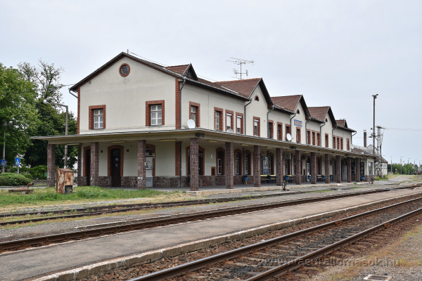
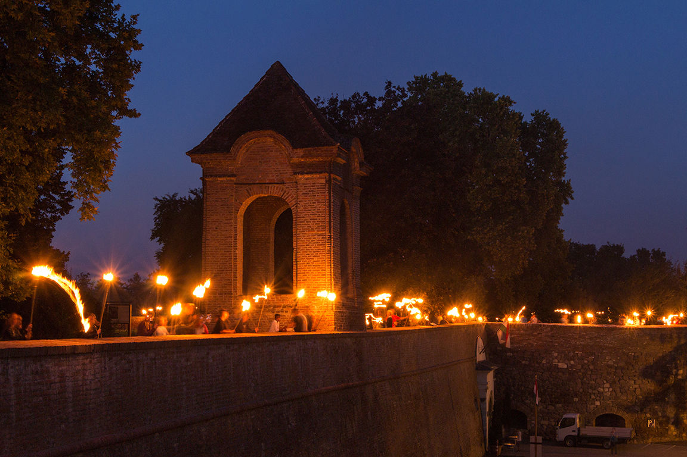
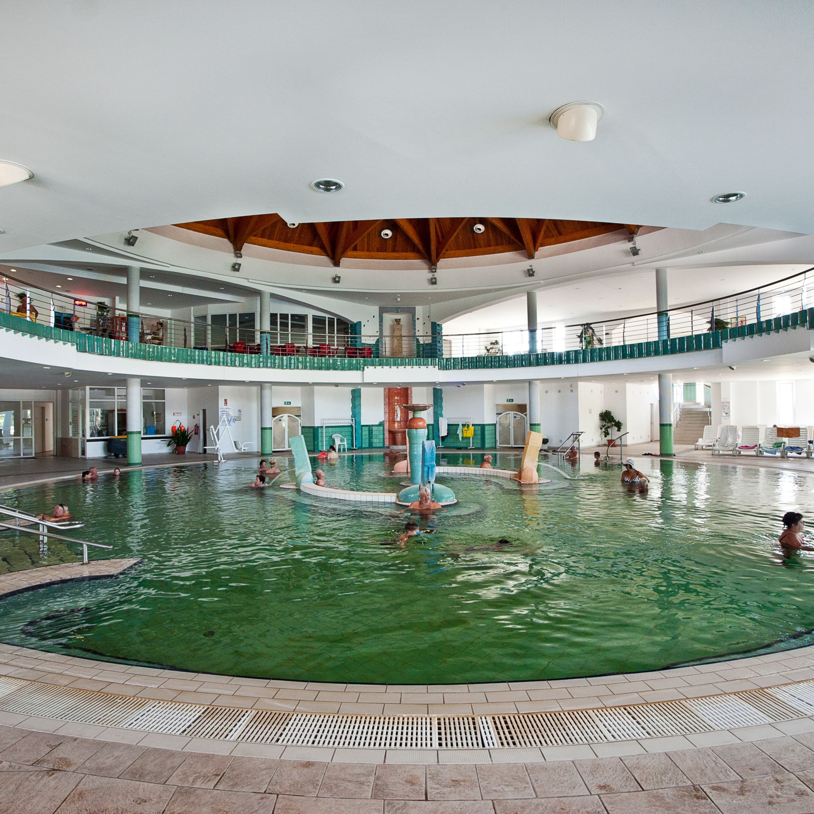

Warum lohnt sich ein Besuch in Szigetvár?
Szigetvár ist eine geschichtsträchtige Stadt in Südtransdanubien. Die Burg, das Thermalbad und die Erinnerungen an Zrínyi machen die Stadt zu einem besonderen Ausflugsziel.

Entdecke Szigetvár mit einem Klick!


Szigetvár ist eine geschichtsträchtige Stadt in Südtransdanubien. Die Burg, das Thermalbad und die Erinnerungen an Zrínyi machen die Stadt zu einem besonderen Ausflugsziel.


Die Burg erinnert an die Belagerung von 1566 und an Miklós Zrínyi. Sie ist einer der wichtigsten historischen Orte der Stadt.
Route planen
Das Thermalbad ist ein beliebter Ort zum Entspannen. Es ist besonders für sein Heilwasser und seine ruhige Atmosphäre bekannt.
Route planenDer Ökopark ist ein familienfreundliches Ausflugsziel mit Natur, Spielmöglichkeiten und viel Platz für Gruppenprogramme.
Route planen